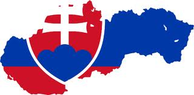

Основні переваги навчання у Словаччині

- Вища освіта у Словаччині відповідає кращим європейським та світовим стандартам. Дипломи, отримані у ВНЗ Словаччини, визнаються і не вимагають додаткового підтвердження не лише в усіх країнах Європейського Союзу, а й в США, Канаді, Австралії, Новій Зеландії, ряді інших країн і є серйозною перевагою при подальшому пошуку роботи за кордоном.
- Для громадян України навчання у всіх без виключення державних вищих навчальних закладах Словаччини за умови навчання на словацькій мові – абсолютно безкоштовне.
- Витрати на проживання в Словаччині під час навчання значно менші ніж в будь-яких інших країнах Євросоюзу. В середньому вартість проживання для іноземного студента становить 250 євро на місяць (проживання в гуртожитку в 2-х містному номері з власною ванною кімнатою, харчування, відвідування спортклубів, басейнів, аквапарків, кінотеатрів, театрів, мобільний зв'язок).
- Іноземні студенти під час навчання в Словаччині мають право офіційно працювати, що дозволяє покривати багато витрат.
- Значною перевагою навчання в Словаччині є спорідненість та близькість української мови зі словацькою, що може істотно полегшити підготовку до вступу в університет, а також сам процес навчання. Словацька мова набагато простіша і ближча до української мови, ніж польська або чеська. Для побутового спілкування (магазини, кафе, розмовна мова) навчання практично не потрібно. Достатньо всього півроку мовних курсів, щоб можна було навчатися нарівні зі словацькими студентами.
- Безпроблемна інтеграція в словацьке суспільство. Менталітет словаків близький і зрозумілий жителям України, що дозволяє студентам легко адаптуватися в країні та завести нових друзів серед місцевих жителів. Словаки досить таки дружньо та люб’язно ставляться до українців. Також хотілося б відзначити в ВНЗ Словаччини досить відчутну вільну атмосферу та індивідуальний (більш лояльний) підхід до кожного іноземного студента.
- Для іноземних студентів при навчанні в Словаччині існує цілком реальна можливість отримати стипендію від 250 до 1000 євро в рамках Національної стипендіальної програми для підтримки обміну студентів, аспірантів, викладачів ВНЗ та науковців, яка заснована Урядом Словацької Республіки. Основною умовою для отримання стипендії є успішне навчання.
- Більшість університетів Словаччини входять до Європейської Асоціації Університетів та тісно співпрацюють з багатьма ВНЗ Європи, беруть активну участь у проектах по обміну студентами, що також надає додаткові можливості як студентам так і викладачам.
- Високий рівень безпеки. Словаччина - країна з найнижчим рівнем злочинності серед усіх країн Євросоюзу. Терористичних загроз до теперішнього моменту не було взагалі. Скляні вхідні двері, ніяких металевих решіток на вікнах першого поверху - це звичайна картина у Словаччині. Тут не потрібно пізно ввечері переходити на інший бік дороги, якщо навпроти йдуть п'ятеро хлопців міцної статури. Тут не чути ночами п'яних криків - це була б просто дикість. Та й взагалі, кричать на вулиці тільки коли когось кличуть (найчастіше - собаку) . Маленька територія Словацької Республіки і відносно висока національна однорідність (велика частина населення - етнічні словаки) є причиною відсутності територіальних, міжнаціональних, релігійних конфліктів.
- Лояльність влади. Словацькі ВНЗ охоче відкривають свої двері перед іноземними студентами і планують далі розвиватися в даному напрямку. До Словаччини набагато простіше отримати візу, так як влада зацікавлена в припливі іноземних студентів і не створює будь-яких штучних бар'єрів та перешкод на відміну, наприклад, від сусідньої Чехії. Лояльне ставлення до іноземців дозволяє легко отримати не лише візу, а й дозвіл на проживання, що вигідно відрізняє Словаччину від інших європейських держав.
- Можливість подорожувати по всіх країнах Євросоюзу. У 2008 році Словаччина приєдналася до Шенгенського договору, що дозволяє студентам, які навчаються тут, безперешкодно подорожувати по всіх країнах-учасницях даного договору. Зі Словаччини можна швидко дістатися в будь-яку європейську країну автомобільним, авіаційним або швидкісним залізничним транспортом. Для прикладу, з центру Братислави до центру Відня на автомобілі їхати 40 хвилин, до Будапешта - менше 2 -х годин, до Праги - менше 2,5 годин, до Мюнхена - 4 години, до найближчого побережжя Адріатичного моря – 5 годин. Всі транспортні комунікації всередині країни відповідають високому європейському рівню. Для студентів словацьких ВНЗ проїзд у залізничному транспорті на території всієї країни – абсолютно безкоштовний.
- Дуже важливою перевагою для навчання в Словаччині є безпосередньо сама Словаччина - екологічно чиста та мальовнича країна, справжня "перлина Європи" з дивовижно красивими натуральними ландшафтами, ефектними вершинами Високих і Низьких Татр, печерами, гейзерами, кришталево-чистими озерами, численними середньовічними замками та старовинними містечками, гірськолижними і термальними курортами. Словаччина - це, без перебільшення, така собі добра дитяча казка, країна-фентезі, в якій все дихає романтикою і старовиною. Прекрасно розвинута по всій Словаччині інфраструктура для занять туризмом і спортом - запорука здорового способу життя не тільки для студентів, а й для всіх місцевих жителів і гостей цієї чудової і доглянутої країни.